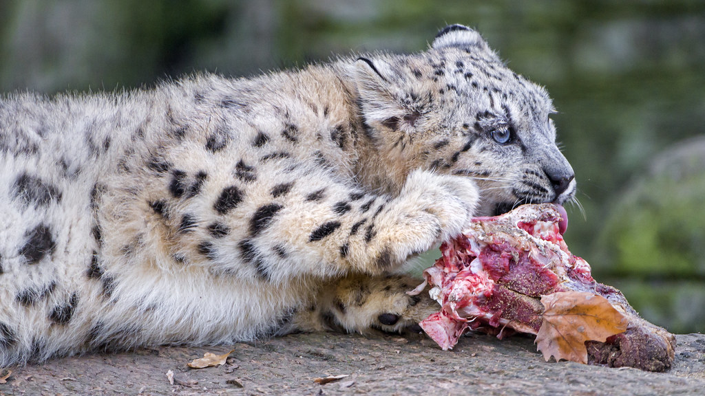

Learn More About the Snow Leopard
Back to Zoo
Back to Home
Habitat
Leopards are one of the most adaptable big cats, found in a wide range of habitats including: Savannas (Sub-Saharan Africa), Rainforests (Congo Basin, Southeast Asia), Mountains (Himalayas, Caucasus, Russian Far East), Deserts and dry forests (Middle East, India), and urban edges. Their adaptability allows them to survive in both extreme heat and cold, as long as there is sufficient prey and cover.
Diet

Leopards are opportunistic carnivores, known for their stealth and strength, and they eat: medium to large mammals (impalas, gazelles, deer, warthogs), smaller prey (rodents, birds, monkeys, reptiles), livestock, and carrion. They are known for dragging their kills up trees to keep them safe from scavengers like lions and hyenas.
Conservation
Leopards are classified as Vulnerable, but their status varies by subspecies. Threats to leopards include: habitat loss and fragmentation, poaching and illegal wildlife trade, retaliatory killings (by farmers when leopards prey on livestock), and competition with other predators such as lions and tigers. Conservation efforts include: protected reserves and parks, law enforcement, and breeding and reintroduction programs for critically endangered subspecies.